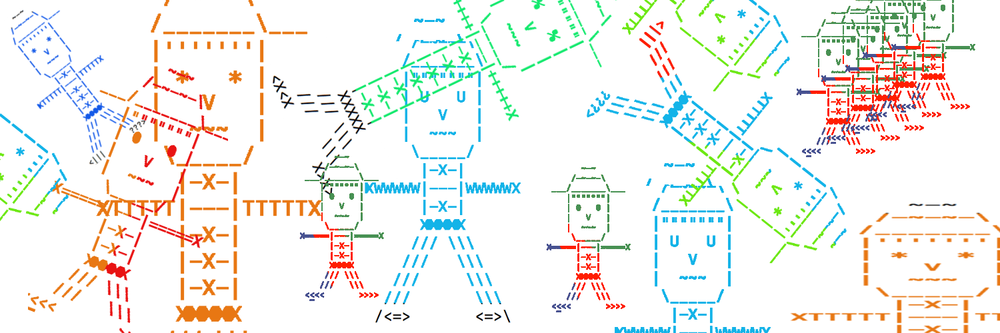

Many of you have probably selected or created an avatar, perhaps for a video-game or a profile image. There are also general-purpose avatar creators online, such as avatarmaker.com. These tools can be used to create an avatar for use on various online accounts.
In this assignment, you will be writing a console-based avatar creation tool.
The program that you build will allow the user to build a custom avatar, or select from 3 pre-designed ones.
The avatars that this program will create will not be of just a face, but rather, an avatar body.
All of the interaction for this program will happen on the command-line.
Part of the purpose of this PA is to get you to use and better understand functions, parameters, if-statements, and while-loops.
Name your program avatar.py.
Note: If you are attending the Grace Hopper Conference, contact the instructor about getting an extension on this PA.
The program will begin with a title and then a prompt to select / create an avatar:
----- AVATAR -----
Select an Avatar or create your own:
This prompt will wait user input. At this point, the user can do one of several things:
exit to exit the program without printing out an avatar.custom to begin the custom avatar creation interface.Jeff, Adam, and Chris.If anything other than exit, custom, Jeff, Adam, or Chris is entered, the program will just repeat the question until a valid input is entered.
After the name is entered, the avatar is printed and then the program exists.
Jeff, Adam, and Chris are shown below. If one of these is selected, you should print out this exact character and then the program can end.
| Jeff | Adam | Chris |
|
|
|
Take a close look at the above avatars. There are many similarities, but also some key differences. The differences of note are:
If custom is selected, then the program should prompt the user for a number of look customization options.
There are 7 total options to select, and the program should ask for the inputs one-by-one.
The prompts should look as follows (example values shown after the question-marks).
Select an Avatar or create your own:
custom
Answer the following questions to create a custom avatar
Hat style ?
right
Character for eyes ?
^
Shaggy hair (True/False) ?
True
Arm style ?
P
Torso length ?
3
Leg length (1-4) ?
3
Shoe look ?
<###>
This sequence of inputs should produce this avatar:
~-~
/-~-~-\
/_______\___
|"""""""|
| ^ ^ |
| V |
| ~~~ |
\_____/
0PPPP|---|PPPP0
|-X-|
|-X-|
|-X-|
HHHHH
/// \\\
/// \\\
/// \\\
<###> <###>
Each of the options control something about the look of the printed avatar. All of the inputs are collected, and then the avatar is printed using the values. More test cases of custom avatars will be provided via the gradescope tests.
This section explains what each input values controls. Each of the inputs have an expected format. However, you do not need to validate all of these inputs. You may assume that the user will enter a value that follows the rules for all of them.
Can be left, right, both or front.
If an invalid value is entered, the default is front.
These correspond to:
| left | right | both | front |
|
|
|
|
The user should enter either True or False.
This determined the shagginess (or thickness) of the avatars hair.
The table shows what True/False correspond to:
| True | False |
|
|
Pretty simple - controls which character should be used for the eyes. The user should enter just one character, not a long string.
This input should be a single character, as with the eyes.
This character will be used for the arm of the avatar.
0 is always used for the hand, and |---| is always used for the body portion.
The entered character should only change the actual arm component.
Controls the length (height) of the torso. The value entered should be any positive integer. Below are examples of various torso lengths.
| 3 | 5 | 7 |
|
|
|
Controls the length (height) of the legs. The value entered should be a positive integer between 1 and 4. Below are examples of the various leg length possibilities.
| 1 | 2 | 3 | 4 |
|
|
|
|
The input here should be a string that is exactly 5 characters long. That is the amount of space allocated for shoes. There can be empty-spaces in the string. The shoe style provided should be used for both the left and right shoe.
Perhaps you’ve noticed by now, but there are a lot of “chunks” of predefined and custom avatars that are similar. For example, all of the avatars have torso sections, but the height of them varies. All of the avatars have the same face structure, but the eyes and hair can change.
You should write a function that is responsible for printing each “chunk” of the avatar. Thus, your program must have at least six functions to receive full points: A main function, and functions for the hat, face, arms, torso, and legs. The parameters of each function should be the values that control the look.
For example, you could write a function called def hat(direction):, where the direction is a string indicating which style to print.
Within the function, you can have if-statements that allow different styles to be printed.
For the face, you could create a function named def face(hair, eyes):.
This function will have the standard face shape print out, but use the hair and eyes parameters to change those specific parts of the face.
You should end up with a function for each part of the body.
See the differ tool and/or Gradescope for examples of complete runs.
You are not allowed to use any string multiplication on this program.
For the torso height and legs, you should try to use while-loops.
Also, all of your code should be organized into functions.
The only code that may not be in a function is a call to main().
You are not allowed to have any global variables.
You also should not use the exit function for this PA.
This PA is due Friday, September 28th at 5:00pm. Turn it in on Gradescope. You should try to make sure that all of the test cases pass before you turn it in. You can still submit without all of the cases passing, but that is not preferable.